방사선비파괴검사산업기사 (2016-10-01 기출문제)
1과목: 비파괴검사 개론
1. 다음 중 침투탐상시험으로 검사할 수 없는 시험품은?
- 유리
- 플라스틱
- 알루미늄
- 다공성 세라믹
(정답률: 100%)

2. 누설률을 구하는 식으로 옳은 것은?
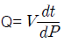
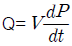
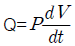
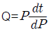
(정답률: 82%)
3. 자분탐상시험에서 시험체에 자속이 흘러 자기를 띤 상태가 되는 것을 무엇이라 하는가?
- 자화
- 강자성
- 누설자속
- 자분의 적용
(정답률: 94%)
4. 감마선 투과검사가 X선과 비교하였을 때의 설명으로 틀린 것은?
- 이동성이 좋다.
- 외부 전원이 필요하다.
- 열려 있는 작은 직경에도 사용할 수 있다.
- 360° 또는 일정 방향으로 투사의 조절이 가능하다.
(정답률: 90%)
5. 다음 비파괴 검사의 특성 중 틀린 것은?
- 침투탐상 검사에서 표면이 개구되지 않은 결함은 검출이 어렵다.
- 방사선 투과 검사는 원리적으로 투과법이다.
- 초음파 탐상 검사는 방사선 투과 검사보다 두꺼운 것 까지 검사할 수 있다.
- 초음파 탐상 검사 시 초음파의 입사방향과 결함의 방향이 평행일 때 탐상감도가 가장 좋다.
(정답률: 70%)
6. 다음 중 마그네슘 합금이 아닌 것은?
- 다우메탈
- 미쉬메탈
- 퍼멀로이
- 엘렉트론
(정답률: 90%)
7. 비정질합금의 특성을 설명한 것 중 옳은 것은?
- 구조적으로 장거리의 규칙성이 없다.
- 불균질한 재료이고 결정이방성이 있다.
- 열에 강하며 고온에서 결정화를 일으킨다.
- 강도가 낮고 연성이 작아 가공경화를 일으킨다.
(정답률: 39%)
8. 고속도 공구강 이 갖추어야 할 성질이 아닌 것은?
- 뜨임 저항성이 없어야 한다.
- 적열 강도가 좋아야 한다.
- 내마모성이 우수 하여야 한다.
- 높은 경도를 가져야 한다.
(정답률: 73%)
9. 초전도재료에 대한 설명 중 틀린 것은?
- 초전도선은 전력의 소비없이 대전류를 통하거나 코일을 만들어 강한 자계를 발생 시킬 수 있다.
- 초전도상태는 어떤 임계온도, 임계자계, 임계 전류밀도보다 그이상의 값을 가질 때 만 일어난다.
- 임의의 어떤 재료를 냉각 시킬 때 어느 임계온도에서 전기저항이 0(ZERO) 이 되는 재료를 말한다.
- 대표적인 활용 사례로는 고압송전선, 핵융합용 전자석, 핵자기공명 단층 영상 장치 등이 있다.
(정답률: 알수없음)
10. 황동의 기계적 성질 중에서 인장강도가 최대 일 때의 Zn 함유량은?
- 30%
- 40%
- 48%
- 60%
(정답률: 85%)
11. 베어링 합금의 구비조건으로 틀린 것은?
- 하중에 견딜 수 있는 정도의 경도와 내압력을 가질 것
- 주조성과 절삭성이 좋고 열전도율이 클 것
- 마찰계수가 크고 저항력이 작을 것
- 내소착성이 크고 인성이 있을 것.
(정답률: 84%)
12. 물과 얼음이 평형을 이룰 때 자유도는?
- 0
- 1
- 2
- 3
(정답률: 70%)
13. 다음 결정입자에 관한 설명 중 틀린 것은?
- 가공도가 작을수록 결정입자는 크다.
- 가열시간이 길수록 결정입자는 크다.
- 가열온도가 높을수록 결정입자는 크다.
- 가공 전 결정입자가 크면 재결정 후 결정입자는 작다.
(정답률: 알수없음)
14. 0.6%C를 함유한 강은 어느 강에 해당되는가?
- 아공석강
- 과공석강
- 공석강
- 극연강
(정답률: 86%)
15. 양백(양은) 의 주요 합금원소로 옳은 것은?
- Zn + Ni + Sn
- Cu + Ni + P
- Cu + Zn + Ni
- Cu + Sn + Cr
(정답률: 알수없음)
16. 맞대기 용접 모재의 인장강도가 450MPa, 용접 시험편의 인장강도가 443MPa인 경우의 이음 효율은 약 몇% 인가?
- 71.1
- 72.2
- 98.4
- 101.5
(정답률: 85%)
17. 용접부의 변형과 잔류 응력을 경감시키는 방법이 아닌 것은?(오류 신고가 접수된 문제입니다. 반드시 정답과 해설을 확인하시기 바랍니다.)
- 억제법
- 도열법
- 역변형법
- 버터링법
(정답률: 알수없음)
18. 다음 중 해머로 가볍게 두들겨서 잔류응력을 제거(완화) 하는 방법과 가장 관계있는 것은?
- 피닝법
- 국부 응력 제거법
- 해머 잔류응력 제거법
- 기계적 응력 완화법
(정답률: 67%)
19. 용접기의 특성 중 부하 전류가 증가하면 단자 전압이 저하하는 특성은?
- 상승 특성
- 수하 특성
- 정전류 특성
- 정전압 특성
(정답률: 알수없음)
20. 누설자속을 변동시켜 전류를 조절하는 방식으로 제작이 쉽고 간다하며, 연속적인 전류조정이 가능하나 아크가 불안정 하고 진동으로 소음이 발생할 수 있는 특징을 교류 아크 용접기는?
- 탭 전환형
- 가동 코일형
- 가동 철심형
- 가포화 리액터형
(정답률: 알수없음)
2과목: 방사선투과검사 원리 및 규격
21. 다음중 감마선 에너지를 측정하는 단위는?
- 큐리 (Curie)
- 렌트겐 (Roentgen)
- 반감기 (half-life)
- KeV 또는 MeV
(정답률: 알수없음)
22. 방사선투과 시험의 투과사진 콘트라스트에 영향을 미치는 인자로 가장 거리가 먼 것은?
- 필름의 종류
- 산란방사선
- 선원과 필름 사이의 거리
- 현상도 (degree of development)
(정답률: 60%)
23. 방사선 투과사진을 관찰하는 실내가 밝은 경우, 투과광(L)외의 산란광이 추가될 때 두 부분의 농도 D1, D2의 농도차(△D)는 다르게 표현된다. 농도 D2 부분에서 추가의 투과광을 △L이라고 할 때 △D를 나타낸 식으로 틀린 것은? (단, D1 ＞ D2 이다)
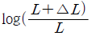
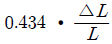
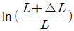
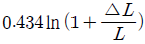
(정답률: 알수없음)
24. 방사선 투과시험에 사용할 X선발생장치를 선정할 때 고려해야 할 점이 아닌 것은?
- 듀티 사이클 (duty cycle)
- 발생기 창구의 자기필터 기능
- 에너지 범위
- 제어 시스템
(정답률: 50%)
25. 방사선투과 사진에서 기하학적 불선명도에 대한 설명으로 옳은 것은?
- 물체-필름 간 거리에 비례하고 초점 크기에 반비례한다.
- 초점의 크기에 비례하고 선원-물체 간 거리에 반비례한다.
- 물체 - 필름간 거리에 반비례하고 선원- 물체 간 거리에 비례한다
- 초점의 크기에 반비례 하고 물체- 필름 간 거리에도 반비례한다.
(정답률: 92%)
26. 물질과 방사선과의 상호 작용에 있어서 다음 중 방사선의 파장이 변하지 않는 현상은?
- 광전 효과
- 톰슨산란
- 컴프턴 산란
- 전자 쌍생성
(정답률: 60%)
27. 휴대용 방사선 측정장비 중 가이거 검출기의 가장 큰 단점은?
- 방사선 에너지의 변화 응답이 부정기적이다.
- 크기가 크고 구조가 예민하다.
- 낮은 방사선에서 수분 동안 감도가 낮다.
- 저온 조작시 수분 동안 워밍업을 하여야 한다.
(정답률: 80%)
28. 다음 중 유해 방사선을 줄이는 데 이용되는 도구로 시험체 주위에 배치하는 것은?
- 콜리메이터
- 마스크
- 조리개
- 필터
(정답률: 67%)
29. 감마선을 이용한 공업용 방사선 투과검사에서 형광 스크린을 거의 사용하지 않는다. 그 이유로 적절한 것은?
- 사진의 콘트라스트를 높이기 때문에
- 방사선투과사진에 줄무늬가 생기게 하지 때문에
- 상호법칙을 따르지 않기 때문에
- 강화인자 가 너무 높기 때문에
(정답률: 알수없음)
30. 양성자의 수는 같지만 중성자의 수가 달라 원자량이 서로 다른 원소는?
- 동위원소
- 원자
- 동질체
- 동중성자핵
(정답률: 92%)
31. 1rad를 SI 단위로 옳게 나타낸 것은?
- 1R
- 10-2Gy
- 100Sv
- 100J/kg
(정답률: 39%)
32. 주강품의 방사선 투과 시험방법 (KS D 0227) 에서 관찰기위 종류에 따른 투과사진의 최고 농도가 옳게 연결된 것은?
- D10 : 1.4
- D20 : 2.8
- D30 : 3.8
- D35 : 4.5
(정답률: 59%)
33. 보일러 및 압력용기에대한 방사선 투과검사 (ASME Sec.V, Art.2) 에서 상질계 부위의 농도와 그 부근의 투과사진 농도의 제한 범위에 대한 설명으로 옳은 것은?
- X선에 의한 투과사진 농도는 최저 1.2, 선에 의한 투과사진 농도는 최저 1.5
- X선에 의한 투과사진 농도는 최저 1.5, 선에 의한 투과사진 농도는 최저 1.8
- X선에 의한 투과사진 농도는 최저 1.8, 선에 의한 투과사진 농도는 최저 2.0
- X선에 의한 투과사진 농도는 최저 2.0, 선에 의한 투과사진 농도는 최저 2.5
(정답률: 70%)
34. 원자력법령에서 정의하고 있는 '수시출입자' 란?
- 방사선 관리 구역에 일시적으로 출입하는 자로서 방사선작업 종사자 외의 자를 말한다.
- 방사선 관리구역을 수시로 출입하는 자로서 방사선 안전관리교육을 받은 자를 말한다.
- 방사선 작업종사자를 제외한 자로서 방사선 관리 구역을 거의 출입하지 않는 직원을 말한다.
- 방사선관리 구역에 업무상 출입하는 자로서 방사선 작업종사자 외의 자를 말한다.
(정답률: 67%)
35. 방사선 작업 종사자의 피부 및 손에 대한 연간 등가선량 한도는?
- 15mSv
- 150mSv
- 500mSv
- 1000mSv
(정답률: 77%)
36. 주강품의 방사선투과 시험방법(KS D 0227)에서 투과사진에 의한 흠의 영상 분류 방법이 잘못된 것은?
- 블로홀은 흠점수를 구하여 분류한다.
- 모래 박힘은 흠점수를 구하여 분류한다.
- 갈라짐은 결함길이를 구하여 분류한다.
- 나뭇가지 모양의 슈링키지는 흠면적을 구하여 분류한다,
(정답률: 알수없음)
37. 보일러 및 압력용기에 대한 표준방사투과검사(ASME Sec.V Art.22 SE-1025)에서 투과도계의 상질수준이 1-2T일 경우 투과도계 식별도는 몇 %인가?
- 1.0%
- 1.4%
- 2.0%
- 2.8%
(정답률: 72%)
38. 열형광선량계(TLD)의 특성에 관한 설명으로 틀린 것은?
- 판독시간이 짧다.
- 빛, 습도 등의 영향이 적다.
- 1개의 소자로는 방사선의 종류를 알 수 없다.
- 여러 번 가열하여 판독하여도 방사선에 관한 정보가 잔존 한다.
(정답률: 63%)
39. γ선을 방출하는 동위원소로부터 3m 떨어진 지점에서의 선량률이 0.04mSv/h 이었다. 이 때 선원으로부터의 거리를 3m 에서 9m 로 멀리하였을 때 선량률은 얼마인가?
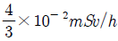
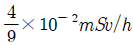
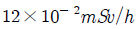
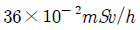
(정답률: 65%)
40. 원자력안전법에서 방사선구역 수시 출입자 및 운반종사자의 연간 유효 선량한도?
- 1mSv
- 3mSv
- 5mSv
- 12mSv
(정답률: 알수없음)
3과목: 방사선투과검사 시험
41. 선원의 크기가 2.3mm, 피사체 두께가 25mm때 기하학적 불선명도를 2.0mm이하로 하려면 선원-필름 간거리는 얼마이상이어야 하나?
- 10.65mm
- 28.75mm
- 53.75mm
- 68.65mm
(정답률: 50%)
42. 반데그라프형 방사선발생장치에 부착된 금속탱크에는 질소, 이산화탄소 및 SF6가 압축되어 있다. 이것의 용도는 무엇인가?
- 산란선의 흡수 및 제거
- 고전압에 의한 아크 방지
- 고에너지 X선의 선택적 흡수
- 이온화를 이용한 하전 입자의 발생 및 X선 집속
(정답률: 70%)
43. 방사선투과검사에 사용되는 필름의 분류 중 속도가 느리고, 콘트라스트가 아주 높으며, 입상성이 아주 낮아, 높은 상질을 얻고자 하는 경우에 사용되는 것은?
- TypeⅠ
- TypeⅡ
- TypeⅢ
- TypeⅣ
(정답률: 90%)
44. X선 발생장치에서 X선관의 관전류는 다음 중 무엇에 의해 조정되는가?
- 음극과 양극 간의 거리
- 필라멘트의 가열 전류
- 표적 물질의 종류
- X선관에 적용된 전압과 파형
(정답률: 47%)
45. 촬영된 방사선 투과사진을 장기간 보관 시 변색되는 가장 큰 이유는?
- 현상이 완전히 되지 않아서
- 정지가 완전히 되지 않아서
- 정착이 완전히 되지 않아서
- 세척이 완전히 되지 않아서
(정답률: 65%)
46. 다음 중 방사선 투과사진에 사용되는 납글자(또는 필름 마커)의 용도로 틀린 것은?
- 촬영 구간 표시
- 필름 종류 식별
- 촬영 일자 식별
- 시험체 두께 표시
(정답률: 알수없음)
47. X선관 표적재료를 선정하는 데 고려해야 할 2가지 주요 요소는?
- 인장강도 및 항복강도
- 용융점 및 자기강도
- 전기저항 및 인장강도
- 원자번호 및 용융점
(정답률: 85%)
48. 일반적인 공업용 X선 발생장치애서 짧은 파장의 X선을 발생시키기 위한 장치조작으로 옳은 것은?
- 관전류를 높인다.
- 관전류를 낮춘다.
- 관전압을 높인다,
- 관전압을 낮춘다.
(정답률: 75%)
49. 다음 중 X선이나 감마선이 물질을 투과할 때 물질과 상호작용을 한 후 전자를 방출하지 않는 경우는?
- 전자쌍생성
- 광전효과
- 콤프톤 산란
- 레이리 산란
(정답률: 67%)
50. 다음 중 X선관의 진공도가 저하된 X선 발생장치를 사용할 때 주의항 내용으로 가장 중요한 것은?
- 접지를 완전리 한다.
- 관전류를 일정하게 한다.
- 관전압을 일정하게 한다.
- 충분히 예열하여 사용한다.
(정답률: 70%)
51. X선 필름의 현상에 대한 설명으로 옳지 않은 것은?
- 25℃ 이상애서는 은압자가 부드러워진다.
- 15℃ 이하에서는 현상작용이 현저하게 감소한다.
- 현상시간이 길면 포화상태 이전까지 감도는 좋아진다.
- 25℃ 이상에서는 현상작용이 너무 급속히 진척되어 필름이 감광현상을 증가 시킨다.
(정답률: 67%)
52. X선 발생장치를 이용한 방사선투과검사 시 여관판 (Filter)사용에 따른 효과가 아닌 것은?
- 장파장 측 X선 흡수
- X선 투과력 증가
- 산란선 감소
- 선질증가
(정답률: 70%)
53. 사진처리가 끝난 필름에 잔류 황산화물이 규정치를 넘으면 필름이 변색되어 장기보관 할수 없게 된다. 잔류 황산화물을 확인할 수 있는 방법은?
- 빙초산법
- 취소 농도법
- 에틸렌 산화법
- 하이포 잔류 측정법
(정답률: 59%)
54. 배관용접부를 촬영한 투과사진에는 종종 불규칙한 형태의 조그만 점상이 용접부위에 하얗게 나타나는데 이는 주로 무엇 때문에 생기는 현상인가?
- 기공
- 슬래그 혼입
- 텅스텐 혼입
- 부적절한 용접방법
(정답률: 46%)
55. 두께 T의 판 중앙에 미소 두께△T의 결함이 존재하는 시험체를 촬영하였다. 결함이 없는곳을 투과한 방사선의 강도를 I, 결함이 존재하는 곳을 투과한 방사선의 강도를 I+△I 라 할 때 선형 흡수계수를 μ라 하면 이들 사이의 관계식을 바르게 나 것은? (단, 산란선의 존재는 무시한다.)
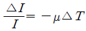
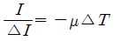
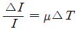
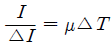
(정답률: 알수없음)
56. 최근 발전소 고온배관의 두께 감육 측정에 CR(Computer Radiography)을 이용한 방사선 투과검사를 수행하고 있는 데, 다음 중 CR의 장점이 아닌 것은?
- 암실이 불필요하다.
- 방사선 피폭이 되지 않는다.
- 공업용 X선 필름이 필요없다.
- 두께의 변동이 큰 시험체에 유효하다.
(정답률: 67%)
57. 다음 중 필름을 천천히 검게 하는 환원작용을 하는 성분은?
- 하이드로퀴논
- 탄산나트륨
- 브롬화칼륨
- 글루터알데히드
(정답률: 알수없음)
58. 다음 중 결함의 깊이 측정이 가능한 방사선투과검사법은?
- 입체방사선투과검사법
- 미시방사선투과검사법
- 순간방사선투과검사법
- 전자방사선투과검사법
(정답률: 84%)
59. 방사선투과검사시 조사방향에 대한 설명으로 옳은 것은?
- 균열은 방사선이 결함과 거의 수직일 때 잘 검출된다.
- 기공이나 둥근 결함은 조사방향과 관계 없으며, 시험체 두께가 얇은 경우보다 두꺼울 때 왜곡현상이 적다.
- 선원-필름 간 거리가 긴 것이 짧은 것보다 결함 왜곡현상이 적다.
- 콜드셧은 방사선이 결함과 거의 수직할 때 잘 검출된다.
(정답률: 30%)
60. 방사선 투과사진에 전체적으로 얼룩덜룩한 자국이 나타났을 때 예상되는 의사지시의 원인은?
- 정전기 자국
- 현상 중 필름접촉
- 외부 빛에 의한 감광
- 필름보호 간지의 자국
(정답률: 알수없음)